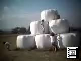
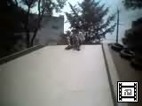
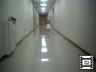
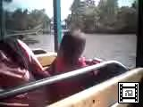
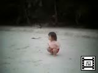
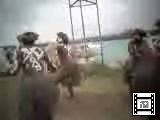

由起子のビデオ(No41-50) |
| 2000年7月22日撮影 (51KB) お姉ちゃんたちと一緒に「イェーイ！」と満足げな由起子。 ママはハラハラ・・・・・。（干草タンクのテッペンで。） |
|
 |
2000年7月22日撮影 (239KB) 信州・長門牧場にて。子供たちがよじ登って遊ぶ「干草タンク」 （と勝手に名付けた）。由起子は一緒にテッペンまで登りたがります。 |
 |
2000年7月1日撮影 (147KB) 大好きなすべり台。でも由起子はまだ小さいから一人では危ない ので、パパと一緒に滑ります。滑り終わると「パパ、もいっかーい」 （もう１回滑りたいよぉー）と何度も何度も言うので、終わりませーん。 |
| 2000年7月1日撮影 (203KB) めったに行かない「昭和公園」へ。この公園は、パパが小さい頃 毎日遊んでいたんですって。今日は「ブランコ」と「すべり台」で 思いっきり遊びました。 |
|
 |
2000年6月24日撮影 (47KB) 地元合唱団の練習に飽きたら、必ずこの廊下を走りまくる 由起子。隣の部屋ではパパたちがお歌をうたってまーす！ |
| 2000年5月22日撮影 (247KB) お休み前の絵本の時間。やっぱり「いいおへんじできるかな」 が大好きなのです。 「かいじゅうさーんのおへんじは？」「ギャッオォーーー（怖い声）」 「ゆきちゃんのおへんじは？」「あーーーい！（かわいい声）」 |
|
 |
2000年5月20日撮影 (171KB) あやめ池遊園地で乗った園内一周列車。あっちキョロキョロ、 こっちキョロキョロ、、、全然じっとしていない由起子です。 |
 |
2000年5月3日撮影 (181KB) あんなに砂浜を歩くのがイヤだったくせに、いつのまにか （お姉ちゃん達に囲まれて遊んでいるうちに）自分でしっかりと 素足で歩いている。 |
| 2000年5月3日撮影 (149KB) カヌメラ湾のスノーケリングスポットで。朝食のパンを投げると あちこちからお魚が寄ってきます。ビックリするくらい。 |
|
 |
2000年5月3日撮影 (91KB) 朝のお散歩途中で見かけたクトビーチのメラネシアダンス。 メイクがとっても印象的。 |